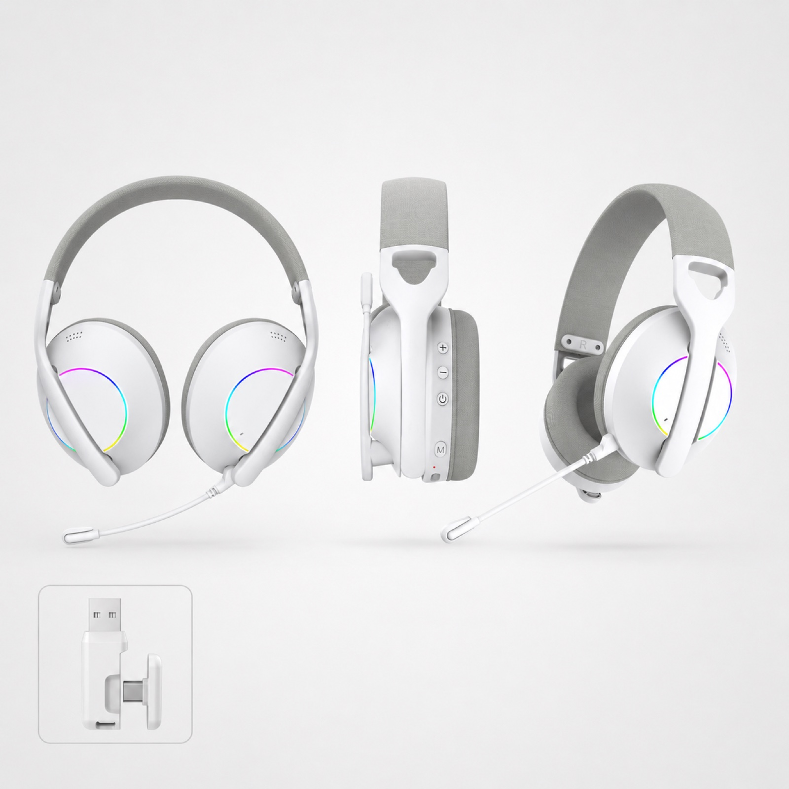
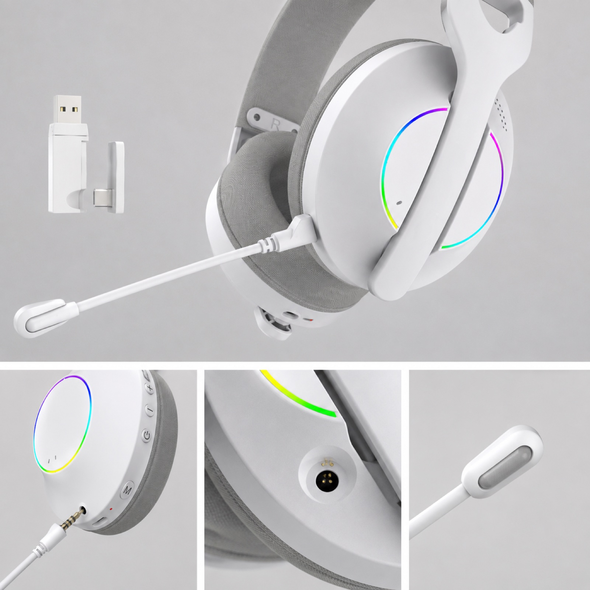
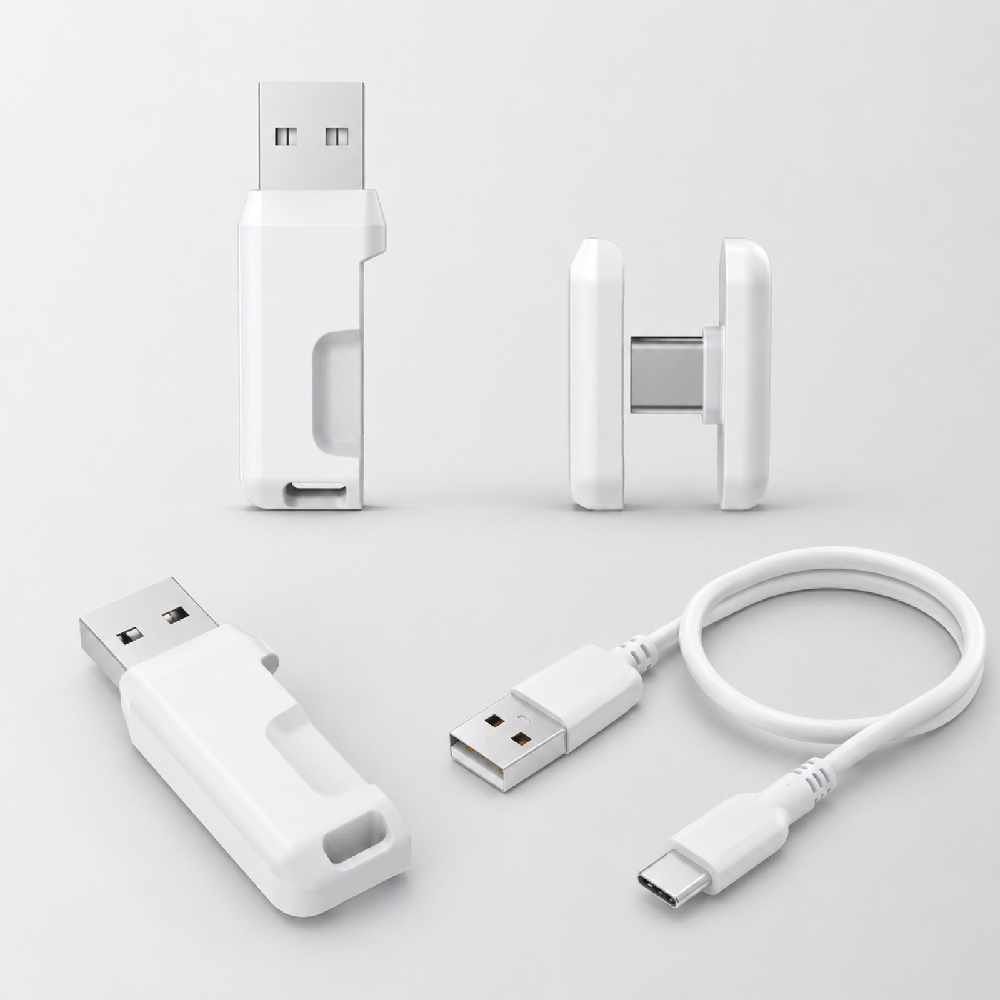
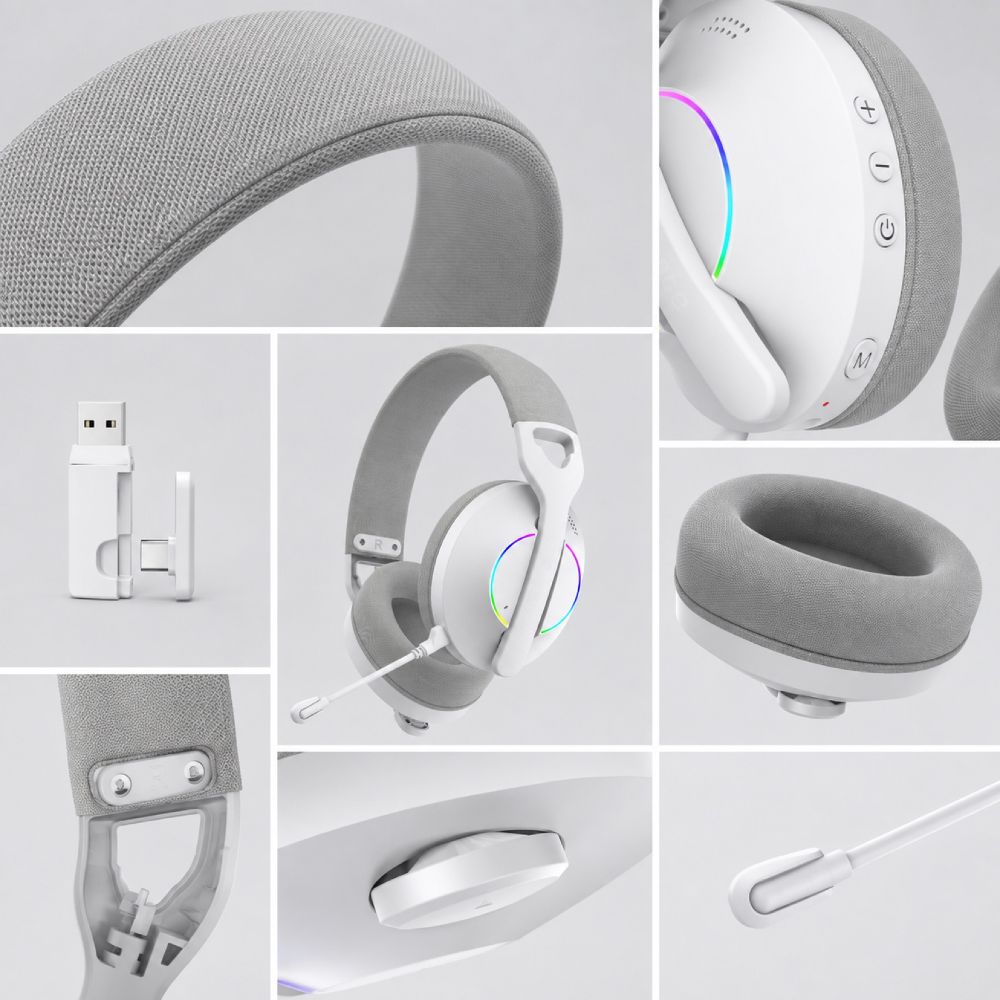
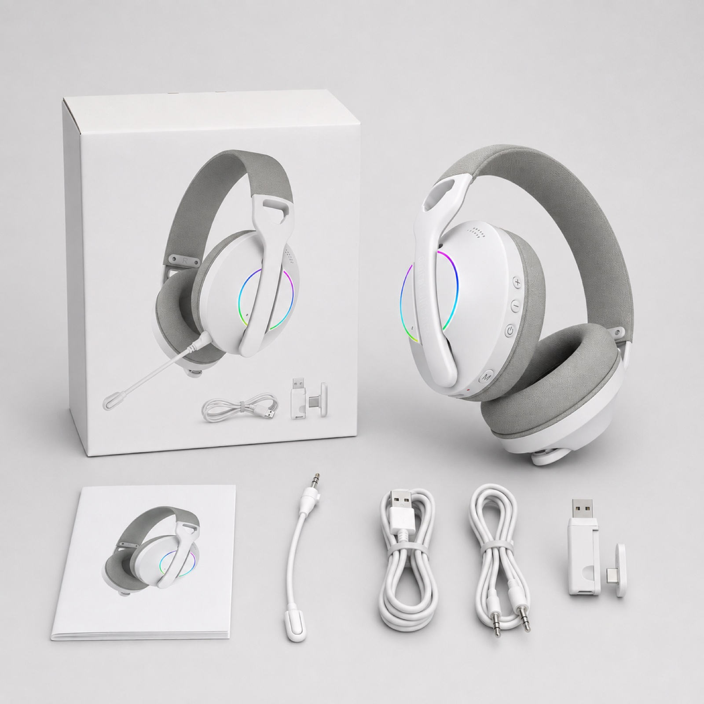
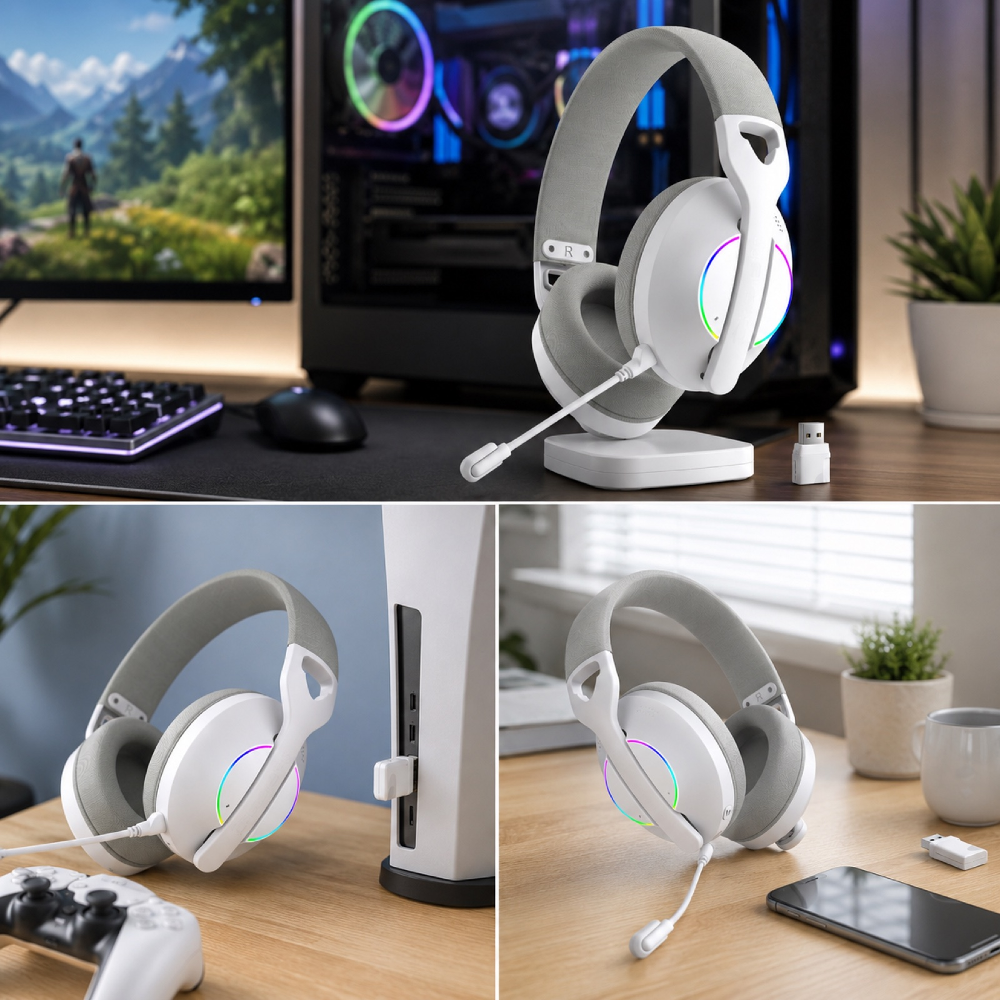

Headset overview and receiver
The overview shows the white headset shape, RGB earcup styling, fabric surfaces, boom microphone and supplied USB receiver reference.

Lightweight gaming headset sample
G936 is a clean white gaming headset direction with knitted fabric headband and ear cushions, RGB earcups, boom microphone and a supplied receiver and cable set. Use the real image evidence below to prepare a focused sample review before finalizing a configuration.
Short answer
G936 gives buyers a lighter, fabric-led gaming headset direction to review alongside conventional PU-cushion models. Its supplied imagery documents the headband, cushions, microphone, controls, receiver, cables, retail package and use scenes without relying on unverified performance claims.
Official product video
This official TALRIVO video shows the G936 fabric-cushion direction alongside a PU comparison. Use it as visual reference, then confirm the selected material and configuration on the approved sample.
Product image evidence
Use these images to align the base sample, accessory list and channel presentation before discussing branding, packaging or a quotation.

The overview shows the white headset shape, RGB earcup styling, fabric surfaces, boom microphone and supplied USB receiver reference.

Close-up images support review of the boom microphone, visible buttons, RGB area, connection points and receiver form.

The supplied set includes a USB receiver reference, USB-C charging cable and 3.5 mm audio cable. Confirm the final connection version and included contents on the selected sample.

The fabric close-ups help buyers assess surface texture, stitching, ear-cushion shape, headband finish and visible control placement.
The wearing image gives a practical reference for headband profile, earcup coverage and boom-microphone placement during sample review.

The package image supports discussion of headset, microphone, receiver, cables, manual, box structure and final packing-list checks.

PC and desk scenes provide visual context for gaming, desktop and everyday communication product presentation.
Comfort direction
Fabric cushions and headbands change the visible product character and can change the wearing experience. Evaluate the actual material, cushion fill, clamp, earcup seal and cleaning expectations on the approved sample rather than assuming one material suits every channel.
Sample checklist
The connection version, receiver behavior, battery, driver and included accessories should follow the final approved sample and specification sheet.
Product FAQ
G936 is a lightweight gaming headset direction with knitted fabric headband and ear cushions, RGB earcups, boom microphone, USB receiver reference, cable set and supplied product evidence.
The images show the headset, receiver, 3.5 mm audio cable, USB-C charging cable, microphone, visible controls, fabric material details, packaging and use scenes.
Review material finish, earcup fit, comfort, heat build-up, cleaning expectations, replacement fit and audio seal on the physical sample before confirming the cushion direction.
Confirm connection version, receiver and cable set, microphone structure, RGB behavior, comfort details, packaging contents, logo area, manual language and destination-market requirements.
Related pages
Share the target market, channel, selected connection version, sample timing, material preference, branding needs and packaging questions for a model-specific review.